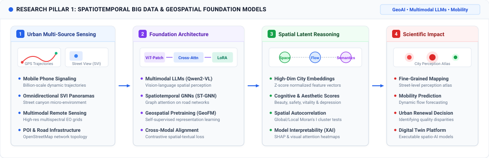
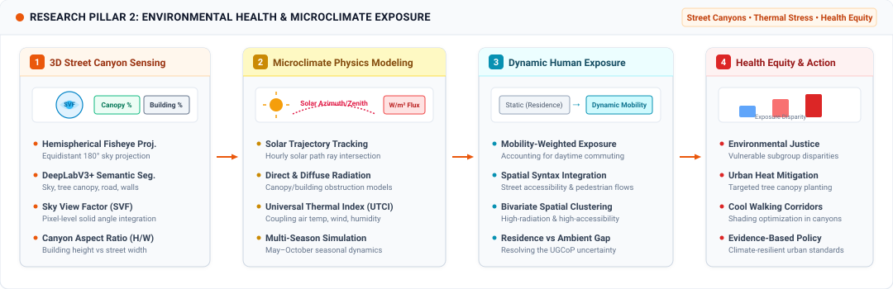
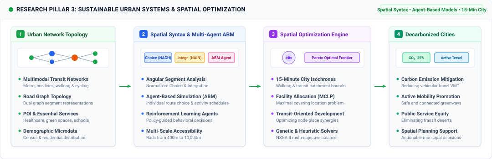
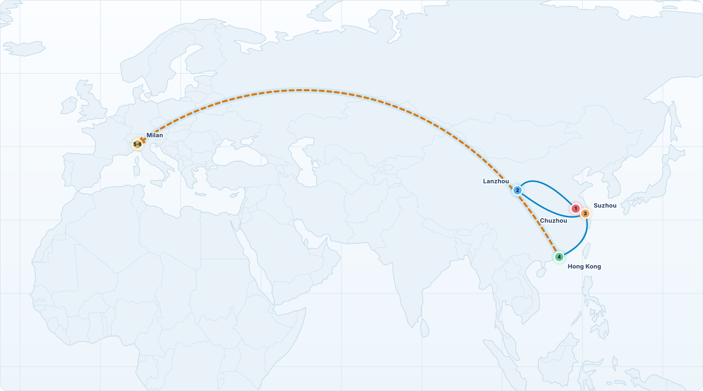
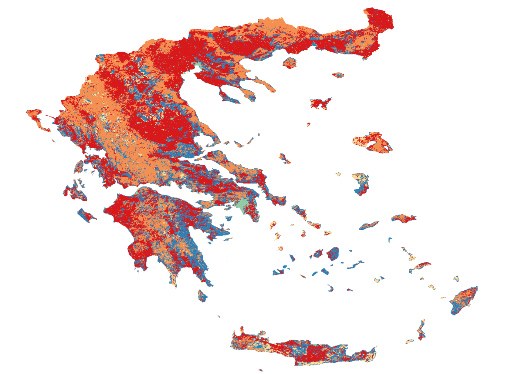
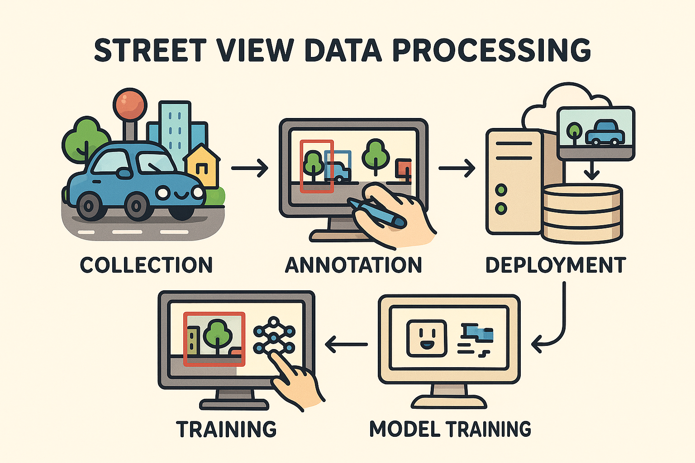
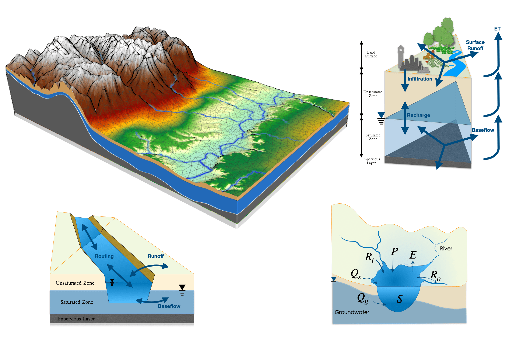

Jiale Guo 郭家乐
/ˈdʒjɑːleɪ ɡwoʊ/Sponsored by China Scholarship Council (CSC)
M.S. in Geoinformatics Engineering, Politecnico di Milano, Italy (2024 - 2026) 公派留学博士生，数据分析与决策科学 (DADS) 项目 (2027 - 2031)
国家留学基金委（CSC）全额资助
地理信息工程硕士，意大利米兰理工大学 (2024 - 2026)
I am an interdisciplinary researcher bridging Geographic Information Science (GIScience), Computer Science, and Data Science. My research investigates computational geographic paradigms to understand complex human-environment interactions. Core research areas include Geospatial Big Data, Health Geography, Environmental & Heat Exposure, Human Mobility Analytics, Geospatial Foundation Models (GeoAI), and Watershed Eco-Hydrological Modeling. 我是一名跨学科研究者，专注于探索地理信息科学（GIScience）、计算机科学与数据科学的理论与方法交叉。聚焦计算地理学前沿范式，运用空间大数据与智能算法研究复杂人地系统交互。核心方向涵盖地理时空大数据、健康地理、环境暴露与热暴露、人类移动性、地理空间基础大模型（GeoAI）与流域水文生态模拟。
Education 教育经历
Data Analytics and Decision Sciences (DADS) 数据分析与决策科学博士项目 (DADS)
Politecnico di Milano 米兰理工大学

Chuzhou University 滁州学院
Research Interests 主要研究方向
Methodological frameworks at the nexus of GeoAI, spatiotemporal big data, urban microclimate, and spatial decision sciences. 聚焦空间人工智能（GeoAI）、时空大数据、街道微气候与空间决策科学的交叉研究范式。

1. Spatiotemporal Big Data & Geospatial Foundation Models (GeoAI) 1. 地理时空大数据与空间基础模型 (GeoAI)
Multimodal LLMs · Spatiotemporal GNNs · MobilityDeveloping geospatial artificial intelligence (GeoAI) frameworks integrating multi-source urban sensing (billion-scale mobile phone trajectories, panoramic street view imagery, remote sensing grids). Leveraging Vision-Language Models (e.g., Qwen2-VL, ViT), Spatiotemporal Graph Neural Networks (ST-GNN), and domain-specific pre-trained foundation models to decode complex human mobility dynamics, urban spatial semantics, and collective cognitive perceptions. 构建面向多源城市感知数据（亿级手机信令轨迹、全景街景图像、高分辨率遥感网格）的地理空间人工智能（GeoAI）计算框架。结合多模态大语言模型（如 Qwen2-VL、ViT）、时空图神经网络（ST-GNN）与地理空间预训练基础模型，实现对城市人群移动动态、微观空间语义和宏观空间认知体验的高精度测度与表征学习。

2. Environmental Health & Microclimate Exposure 2. 环境健康、微气候与极端热暴露
Street Canyons · Thermal Stress · Health EquityQuantifying hyperlocal urban street canyon microclimate and compound environmental health risks. Combining hemispherical fisheye projections, DeepLabV3+ semantic segmentation (sky view factor, tree canopy, building facades), and ray-tracing solar radiation flux modeling. Investigating mobility-weighted dynamic thermal exposure, Universal Thermal Climate Index (UTCI), spatial accessibility overlays, and environmental justice disparities among vulnerable populations. 量化微观尺度街道峡谷微气候与复合环境健康风险。融合半球鱼眼投影转换、深度学习语义分割（天空开阔度 SVF、树冠遮蔽度、建筑界面）及光线追踪太阳辐射通量模拟。深入研究人类移动性加权下的动态热暴露、通用热气候指数（UTCI）、空间句法可达性叠加机制，揭示极端气候情景下弱势群体的环境正义与健康不平等。

3. Sustainable Urban Systems & Spatial Optimization 3. 可持续城市系统、空间优化与人居健康
Spatial Syntax · Agent-Based Models · 15-Min CityAdvancing computational urban planning and decarbonization strategies through spatial syntax (angular segment Choice & Integration), multi-agent human behavioral simulation (ABM), and multi-objective spatial optimization. Evaluating 15-minute city accessibility isochrones, public health resource allocation, transit-oriented development (TOD), and carbon emission mitigation in support of climate-resilient cities. 通过空间句法（角线段 Choice 与 Integration 指标）、多智能体人群行为仿真（ABM）及多目标空间优化算法，推动计算城市规划与双碳减排实践。深入评估15分钟城市生活圈等时线、公共医疗服务均等化配置、公共交通导向开发（TOD）及交通碳排放减缓，为气候韧性城市规划提供科学决策支持。
Academic Journey 学术历程
An international academic path across China, Hong Kong and Italy. 跨越中国大陆、中国香港与意大利的学术深造轨迹。

Geographical trajectory: Chuzhou, China → Lanzhou, China → Suzhou, China → Hong Kong, China → Milan, Italy.
Institutional trajectory: Chuzhou University → Chinese Academy of Sciences (UCAS) → Suzhou Industrial Park Surveying & Mapping → The Chinese University of Hong Kong (CUHK) → Politecnico di Milano (Master's) → Politecnico di Milano (DADS Ph.D.).
Subject trajectory: Geography & GIS — Eco-Hydrological Modeling (SHUD) — Geospatial Data Engineering — GeoAI & Multimodal Urban Perception — Environmental Health & Heat Exposure — Spatial Decision Sciences.
地理空间轨迹： 中国滁州 → 中国兰州 → 中国苏州 → 中国香港 → 意大利米兰。
学术机构轨迹： 滁州学院 → 中国科学院西北生态环境资源研究院 (UCAS) → 苏州工业园区测绘地理信息有限公司 → 香港中文大学 (CUHK) → 米兰理工大学 (硕士) → 米兰理工大学 (CSC公派DADS博士)。
学术主题轨迹： 地理学与GIS — 生态水文模拟（SHUD） — 地理空间数据工程 — GeoAI与多模态城市感知 — 环境健康与热暴露 — 空间决策科学。
Honors & Awards 荣誉与奖励
- CSC Ph.D. Fellowship (State Scholarship Fund) 国家留学基金委（CSC）公派全额博士奖学金 2026
- Outstanding New Employee, SIP Surveying & Mapping (Top 5%) 苏州工业园区测绘地理信息有限公司优秀新员工 (前5%) 2023
- "Esri Cup" College GIS Software Development Competition, 3rd Prize "Esri杯" 中国大学生GIS软件开发竞赛全国三等奖 2022
- Excellent Graduation Thesis of Chuzhou University (Top 3%) 滁州学院校级优秀毕业论文 (前3%) 2021
- Excellent Graduate of Higher Education, Anhui Province (Top 2%) 安徽省普通高校优秀毕业生 (前2%) 2021
- National Encouragement Scholarship, Ministry of Education (Top 3%) 中华人民共和国教育部国家励志奖学金 (前3%) 2020
- Anhui Province GIS Skills Competition, 2nd Prize (Two consecutive years) 安徽省大学生GIS技能竞赛二等奖 (连续两年) 2019–2020
- China University Geography Science Exhibition Competition, 3rd Prize 中国大学生地理科学展示竞赛全国三等奖 2019
- Academic Excellence Scholarship (Three consecutive years) 学业优秀一等奖学金 (连续三年) 2017–2020
Selected Publications 学术论文
View All Papers 查看全部发表Mapping the exposure to solar radiation on urban street canyon using street view images, deep learning, and spatial syntax 结合街景影像、深度学习与空间句法的城市街道峡谷太阳辐射暴露评估
A Framework for Evaluating Urban Spatial Perception Based on Large Multimodal Models: From Prompt Engineering to Empirical Analysis 基于多模态大模型的城市空间感知评估框架构建与实证研究
Landscape Architecture (《风景园林》), Published online (CNKI), 2026. 1 北京大学；2 米兰理工大学；3 同济大学；4 哈尔滨工业大学（深圳）
《风景园林》，知网网络首发，2026。
Research Projects & Tools 研究项目与工具
All Projects 所有项目
Air Pollution & Population Exposure in Greece 希腊空气污染与人口暴露分析 (WebGIS)
Interactive WebGIS application built with OpenLayers analyzing NO2, PM2.5, and PM10 distributions across Greece. 基于 OpenLayers 构建的 WebGIS 平台，综合分析希腊全境多源大气污染物时空分布及人口暴露情况。
Live Demo在线演示30DayMapChallenge - Cartographic Experiments 30DayMapChallenge 地图制图实验
Chinese Ink Painting Series for the 30DayMapChallenge (Day 30 Remix). Ranked 5th with 132 likes. Blends DEM terrain data with classical painting styles. 30DayMapChallenge 制图作品（第5名），将高程与地形数据与中国传统水墨画意境相结合的制图实验。
View Gallery作品画廊
Urban Environment Analysis via Street View Imagery 基于街景图像的城市环境与多模态感知分析
Computer vision and large multimodal models processing street-level imagery to evaluate greenery coverage, urban facades, and pedestrian infrastructure. 结合计算机视觉与多模态模型处理街道级图像，自动化量化城市绿化率、立面形态及公共感知评价。
Study Notes分析笔记
Runoff Simulation in Qinghai Lake Watershed (SHUD) 青海湖流域产汇流模拟与水文生态建模 (SHUD)
Hydrological simulation using the Simulator for Hydrologic Unstructured Domains (SHUD) model to evaluate land use impacts on watershed water resources. 运用非结构网格水文模拟系统（SHUD）模拟高原流域水循环过程与土地利用响应规律。
SHUD LabSHUD实验室Research & Work Experience 研究与工作经历
-
Chinese Academy of Sciences (UCAS) 中国科学院西北生态环境资源研究院 10.2021 – 06.2022Research Assistant · SHUD Hydrological Modeling Lab 研究助理 · SHUD水文过程建模实验室
Conducted distributed eco-hydrological simulations in alpine watersheds (Qinghai Lake Basin). Evaluated climate/land-use change impacts on runoff and spatial water balance. 从事高原寒区水文生态模拟（青海湖流域），应用非结构网格水文模型开展土地利用与气候变化对产汇流过程的响应评估。
-
Suzhou Industrial Park Surveying & Mapping Co., Ltd. 苏州工业园区测绘地理信息有限公司 01.2023 – 07.2024Project Manager & Geospatial Data Engineer 项目经理 & 地理空间数据工程师
Managed spatial database infrastructure, automated geospatial ETL workflows, and delivered urban digital twin spatial analytics. Awarded Outstanding New Employee (Top 5%). 负责城市空间数据库底座运维、时空数据自动化处理管线开发与数字孪生空间分析项目管理，荣获公司年度“优秀新员工”（前5%）。
-
Geographic Big Data Lab, Chuzhou University 滁州学院 地理大数据实验室 01.2020 – 06.2021Undergraduate Research Assistant 本科生科研助理
Undergraduate research in spatiotemporal drought dynamics across the Jianghuai Watershed. Completed university-level top thesis (Top 3%). 开展江淮分水岭干旱灾害时空演化与趋势分析研究，完成校级优秀毕业论文（前3%）。
Professional Memberships 学术组织与兼职
- CPGIS - The International Association of Chinese Professionals in GIS (Student Member, 2025)
- AAG - American Association of Geographers (Member, 2025)
- GAMA - GIS and Agent-based Modeling Association
- CSGPC - Chinese Society for Geodesy, Photogrammetry and Cartography